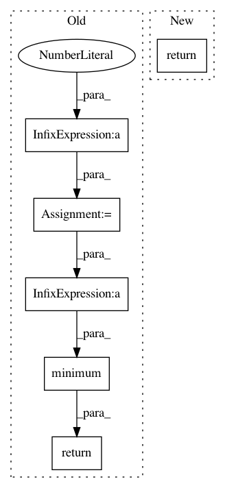

1660b4cac42322f25a0e8f2645f4c01ef55a1792,opennmt/utils/decay.py,,noam_decay,#Any#Any#Any#Any#Any#Any#,8
Before Change
_ = name
scale = tf.cast(learning_rate, tf.float32)
step = tf.cast(global_step, tf.float32) + 1
hidden_size = tf.cast(decay_rate, tf.float32)
warmup_steps = tf.cast(decay_steps, tf.float32)
return (scale
* tf.pow(hidden_size, -0.5)
* tf.minimum(tf.pow(step, -0.5), step * tf.pow(warmup_steps, -1.5)))
def rsqrt_decay(learning_rate,
global_step,
After Change
_ = staircase
_ = name
return noam_decay_v2(learning_rate, global_step, decay_rate, decay_steps)
def noam_decay_v2(scale, step, model_dim, warmup_steps):
Defines the decay function described in https://arxiv.org/abs/1706.03762.
In pattern: SUPERPATTERN
Frequency: 3
Non-data size: 6
Instances
Project Name: OpenNMT/OpenNMT-tf
Commit Name: 1660b4cac42322f25a0e8f2645f4c01ef55a1792
Time: 2018-11-13
Author: guillaumekln@users.noreply.github.com
File Name: opennmt/utils/decay.py
Class Name:
Method Name: noam_decay
Project Name: ray-project/ray
Commit Name: ce96b03b07a4a4bdd851aa84493c616cd291aff2
Time: 2020-10-06
Author: sven@anyscale.io
File Name: rllib/examples/env/mbmpo_env.py
Class Name: HopperWrapper
Method Name: reward
Project Name: arnomoonens/yarll
Commit Name: ecf257c1813cf3dd320c6d717208611dadeb2f0e
Time: 2018-03-15
Author: arno.moonens@gmail.com
File Name: agents/ppo/ppo.py
Class Name: PPO
Method Name: make_actor_loss